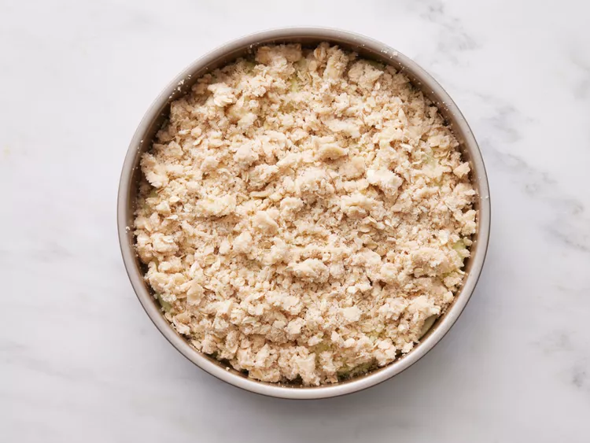

This Irish apple cake has a delicate texture and is topped with a cinnamon-oat streusel and cinnamon glaze. A must for St. Patrick's Day or easy enough for an anytime snack.
For the streusel, combine flour, sugar, oats, salt, and cinnamon in a bowl. Using a fork or pastry cutter, cut butter into the mixture until it is fully incorporated and has the texture of coarse bread crumbs, about 2 minutes. Chill in the refrigerator until ready to use.
Preheat the oven to 350 degrees F (175 degrees C).
For the cake, grease a 9-inch round cake pan with cooking spray. Combine butter, sugar, and brown sugar in a medium bowl. Beat at medium speed, until lightened in color and fluffy, 3 to 4 minutes. Beat in eggs, 1 at a time, on low speed, just until blended. Beat in vanilla extract.
Combine flour, baking powder, cinnamon, and salt in a small bowl. Add flour mixture to butter-egg mixture and beat on low speed until fully incorporated, 1 to 2 minutes. Add milk and beat on low speed until combined, about 45 seconds.
Spread cake batter evenly in the prepared pan.
Arrange apple slices evenly on top of batter, overlapping as needed.
Sprinkle apples with streusel.
Bake in the preheated oven until a toothpick inserted into the center comes out clean and streusel is golden brown and crisp, 40 to 50 minutes. Let cake cool in pan on a wire rack 10 minutes. Remove from pan to wire rack and let cool completely, 30 to 45 minutes.
For the cinnamon glaze, whisk together confectioners' sugar, cinnamon, and milk in a small bowl until smooth.
Drizzle glaze over cake before serving.